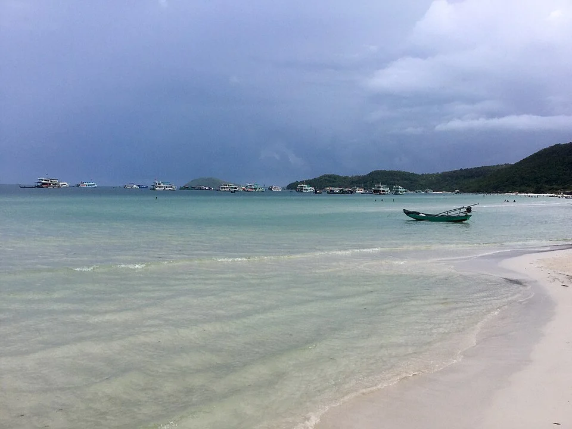
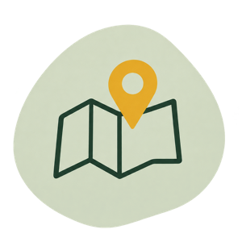
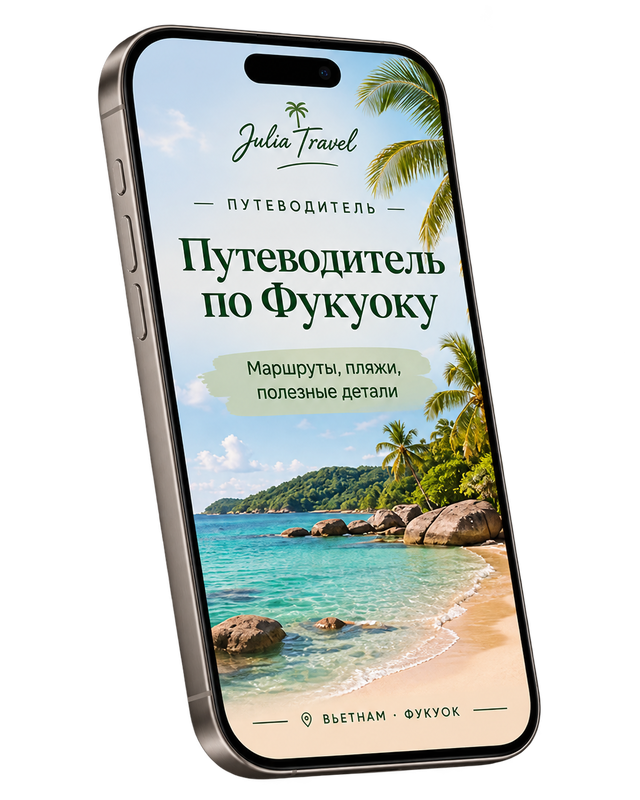
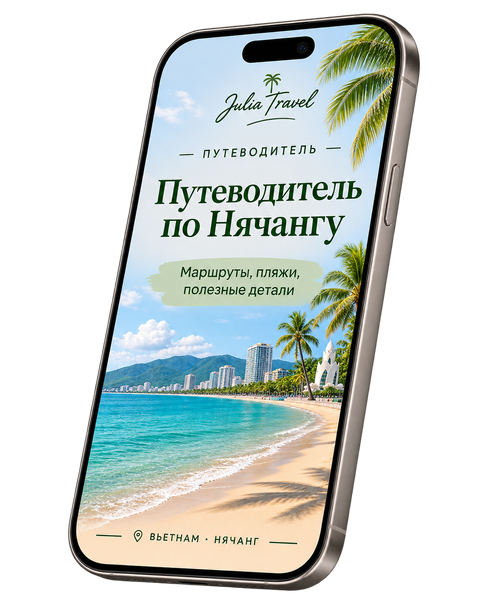
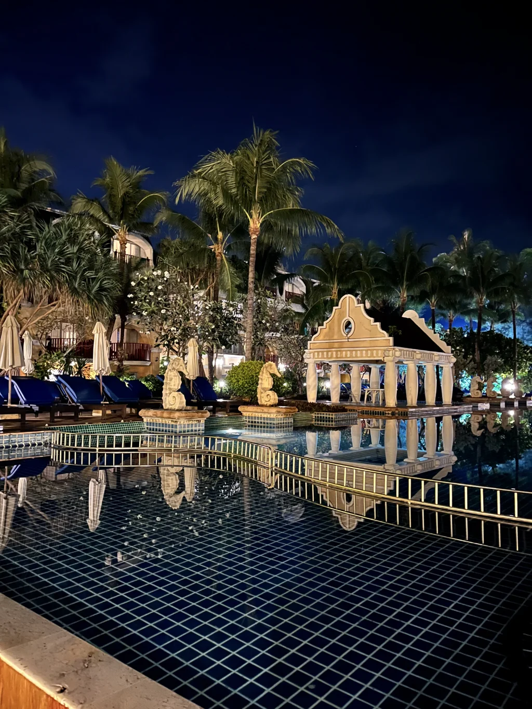
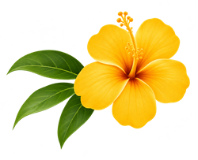
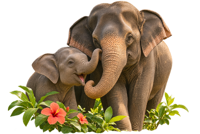
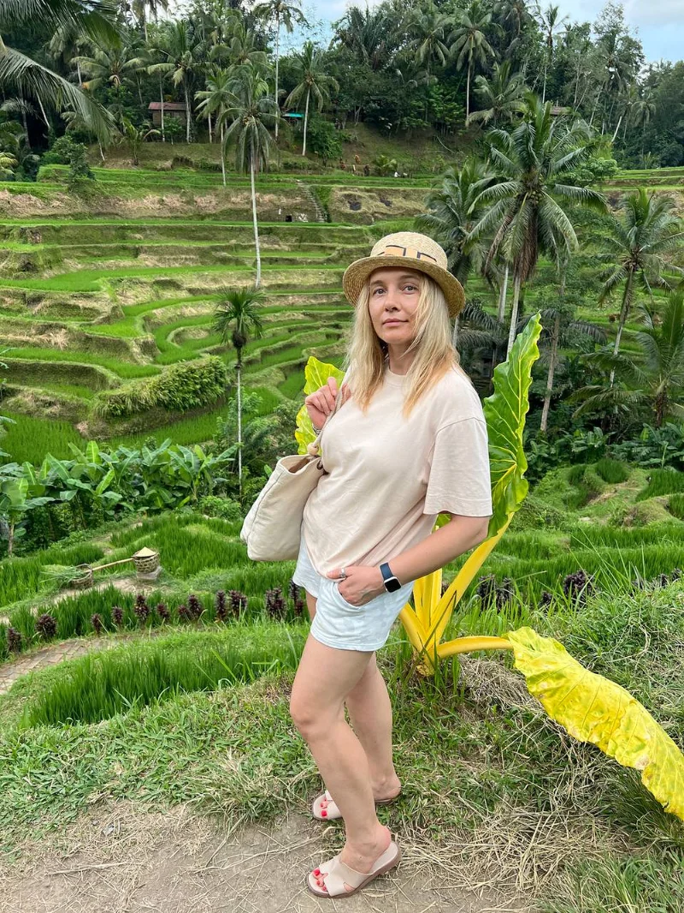

Фукуок
Тропический остров, белый песок и море, о которых мечтают все!
.png)
Путешествия по Вьетнаму
Помогу выбрать курорт и продумать детали поездки

Фукуок — для тех, кто мечтает о тропических пляжах и неспешном отдыхе. Нячанг — для тех, кто любит море, прогулки и яркую жизнь курортного города. Выберите направление по душе.

Тропический остров, белый песок и море, о которых мечтают все!

Широкие пляжи, морские прогулки и город, где каждый день можно открыть что-то новое.

Фото: Prince Roy, Ken Marshall · CC BY 2.0 · кадрированы

.webp)
.webp)
.webp)
.webp)
.png)

Я работаю в туризме с 2008 года и хорошо понимаю, сколько вопросов возникает перед путешествием, особенно если отправляешься за границу впервые.
Сама я впервые увидела море в 35 лет, поэтому знаю, как важно чувствовать себя уверенно в незнакомой стране. В своих путеводителях собираю понятные маршруты, проверенные рекомендации и полезные детали, которые помогут подготовиться к поездке без лишних переживаний.
.png)
Это не только красивые пляжи и популярные курорты. Это шумные улицы, колоритные рынки, маленькие кафе, лодки, невероятная природа и повседневная жизнь местных жителей.
Мне нравится открывать места, которые редко встречаются в стандартных туристических подборках. Я делюсь личными впечатлениями и находками, чтобы вы могли увидеть Вьетнам с разных сторон и выбрать путешествие по душе.
Готовые PDF-гиды с рекомендациями, маршрутами и полезными деталями для самостоятельной подготовки к поездке.
Помогу выбрать направление, курорт и отель с учётом ваших пожеланий и формата отдыха.
Готовые идеи прогулок и поездок, которые помогут познакомиться с интересными местами Вьетнама.
Составлю индивидуальный маршрут по Вьетнаму с учётом ваших дат, интересов, бюджета и состава путешественников. Помогу продумать последовательность поездок, интересные места и время на отдых.
.webp)

.webp)


.png)
.png)

Фукуок — тропический остров на юго-западе Вьетнама, в Сиамском заливе. Здесь пляжи с мягким песком, тёплое море и живописная природа. В путеводителе собраны рекомендации, маршруты и полезные детали, которые помогут спланировать отдых.
Как спланировать поездку в сафари-парк Фукуока: дорога, особенности посещения и полезные советы, которые помогут организовать день без лишней спешки.
Канатная дорога над морем, пляжи и развлечения острова. Подскажу, как добраться и распределить время, чтобы успеть самое интересное.
Иллюстративные фотографии
.png)
.png)

Нячанг — курортный город на юге центрального Вьетнама, на берегу Южно-Китайского моря. Здесь длинные пляжи соседствуют с оживлёнными улицами, кафе, рынками и интересными местами для поездок. В путеводителе собраны маршруты и полезные рекомендации, которые помогут выбрать район для отдыха и спланировать каждый день.
.webp)
Горячие источники, грязевые ванны и отдых в комплексе 100 Egg. Помогу разобраться, как добраться, что предусмотреть и сколько времени выделить на посещение.

Аттракционы, развлечения и множество интересных мест. Мини-гид поможет заранее выбрать главное и спланировать день в VinWonders.
Иллюстративные фотографии
Яркая природа, колоритные города, тёплое море и необычные маршруты — у каждого свой Вьетнам. Если вы только собираетесь познакомиться со страной или уже бывали здесь и хотите открыть новые, пока неизвестные вам места, я помогу выбрать направление и формат путешествия.
.webp)
.png)
.png)
Планируете первое путешествие или хотите узнать о Вьетнаме больше? Я подготовила полезные материалы, которые помогут разобраться в деталях, выбрать интересные места и увереннее планировать отдых.
.webp)
Понятный чек-лист для подготовки к первой поездке: документы, сборы, связь и важные мелочи, которые стоит предусмотреть заранее.
Когда лучше ехать, какой район выбрать и на что обратить внимание перед бронированием. Первые шаги к путешествию на тропический остров.
Чем отличаются пляжи острова, как выбор расположения влияет на впечатления и что важно проверить перед поездкой.

Практичные советы и личный опыт, которые помогут подготовиться к путешествию, выбрать подходящий отдых и лучше узнать Вьетнам.
Чем отличаются пляжи острова и какой выбрать под свой формат поездки.
На что смотреть при бронировании, кроме красивых фотографий и цены.
.webp)
Что учесть при выборе пляжа, жилья и программы отдыха для всей семьи.
Собрала ответы на вопросы, которые чаще всего возникают перед поездкой: про сезон, выбор курорта, документы, отдых с детьми и подготовку к путешествию.

Это зависит от направления и формата отдыха. Для пляжного отпуска, семейной поездки или знакомства со страной лучше ориентироваться на сезонность конкретного региона. Я помогаю подобрать направление с учётом времени поездки и ваших ожиданий.
Фукуок подойдёт тем, кто хочет более спокойный островной отдых, пляжи и размеренный ритм. Нячанг — тем, кому важны городская инфраструктура, прогулки, кафе и активность. Выбор зависит от вашего формата отпуска.
Условия въезда зависят от гражданства, длительности поездки и актуальных правил на момент путешествия. Перед поездкой лучше проверить свежие требования, а при необходимости я подскажу, на что обратить внимание при подготовке.
Да, во Вьетнам часто едут семьями. Важно заранее выбрать удобный курорт, спокойный пляж, подходящий отель и понятную логистику. В материалах и консультациях я помогаю учесть такие детали заранее.
Лучше заранее подготовить документы, страховку, базовую аптечку, средства от солнца и продумать мелочи вроде связи и оплаты. Для этого на сайте есть полезные материалы и чек-листы.
Да, если нужен более индивидуальный формат, можно запросить помощь в подборе маршрута с учётом ваших интересов, состава семьи и продолжительности поездки.
Вымышленные отзывы и оценки для макета

.webp)